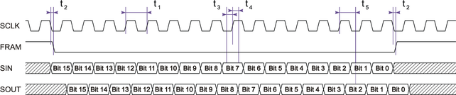

Specifications for the serial interface
- V93000 Pin Scale and Smart Scale systems running SmarTest 7,
- V93000 Pin Scale and Smart Scale systems running SmarTest 8,
- V93000 EXA Scale systems running SmarTest 7 and equipped with the optional Utility Card.
On V93000 EXA Scale systems running SmarTest 8 and equipped with the optional Utility Card, the pattern sequencer controls utility lines via an internal data path.
I/O levels
| Pin | Parameter | Value and unit |
|---|---|---|
| SINP, FRAMn, SCLK | Maximum voltage with respect to UGND | 2.3 V |
| Minimum voltage with respect to UGND | -0.5 V | |
| SOUT | Maximum current | 12 mA |
| Pin | Parameter | Value and unit | |
|---|---|---|---|
| SINP, FRAMn, SCLK | Recommended drive high voltage | 1.8 V | |
| Recommended drive low voltage | 0.0 V | ||
| Typical threshold | 0.9 V | ||
| SOUT | Recommended receive high threshold | 1.1 V | |
| Recommended receive low voltage | 0.7 V | ||
|
The pogo pin SOUT is able to drive a 50 Ω terminated line. For termination by an active load, we recommend setting the following parameters: |
|||
| Vcom | 0.9 V | ||
| IOH, IOL | 12 mA | ||
Timing specifications

- Serial input and output clocking
-
SINP is the serial input line to the utility line controller of the wiring board; data should be driven with the falling edge of SCLK, it is sampled with the rising edge of SCLK.
SOUT is the serial output line from the utility line controller; data is clocked out with the falling edge of SCLK.
- Reading and writing utility lines
-
With the falling edge of FRAMn, the state of the utility lines is read in parallel into a shift-register of the utility line controller.
As long as FRAMn remains active (low), the content of the register is shifted by one bit with every falling edge of SCLK. The SINP. input data is passed into the MSB of the shift-register and the LSB is used as SOUT signal. The sampling point for serial output data is always relative to the rising edge of SCLK but the delay t5 must be added to achieve correct sampling.
On the rising edge of FRAMn the content of the register is written in parallel to the utility line outputs.
- Timing parameters
-
Description min. max. t1 Clock period (duty cycle 50 %) 100 ns t2 Delay from falling clock edge to rising or falling FRAMn -20 ns 20 ns t3 Setup time of SINP before rising edge of clock 30 ns t4 Hold time of SINP after rising edge of clock 30 ns t5 SOUT valid after rising clock edge 0.5 * t1 + 80 ns 0.5 * t1 + 120 ns The clock input is filtered; clocks that exceed the allowed maximum frequency of 10 MHz are ignored.
We recommend, setting the receive strobe for SOUT to 0.5 * t1 + 100 ns referenced to the rising edge of the clock.
Grounding
The serial interface uses UGND as ground reference and return path. For pogo block pin mapping in the various DUT interfaces refer to Pogo pin assignment - Utility pogo blocks.
You may want to isolate the digital pins from the utility lines for various reasons, for example to reduce noise on the lines, digital pins or DGND, or to avoid ground loops, but you should be aware of the disadvantages of using isolating devices:
- the delay from SINP/FRAM/SCLK to SOUT may be significant,
- the drive high level is 1.8 V, which may require using level shifters for some applications,
- the propagation delay skew between SINP, FRAM and SCLK may reduce the maximum data rates,
- in general, opto-couplers may be too slow for your application; a possible solution may be using non-optical digital isolators.
Functional changes
- Introduced in SmarTest 7.1.0
- SmarTest 7.2.0: 256 sequencer‑controlled utility lines introduced on ATH/CTH/STH DUT Scale and on LTH